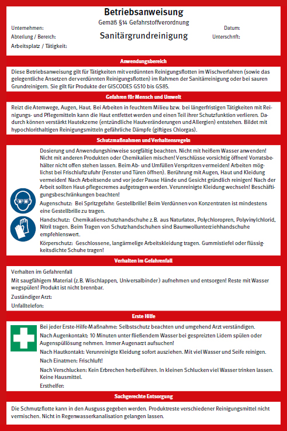

Ausgangslage:
In einem Krankenhaus führen 5 Beschäftigte neben der üblichen Unterhaltsreinigung eine Tankinnenreinigung durch.
Anmerkungen zum Berechnungsbeispiel Gebäudereiniger:
| Betriebsstätte | Kriterien für die Anzahl der Sibe | Anzahl der Sibe | ||||
| Gesundheitsgefahren | Anzahl der Beschäftigten | Räumliche Nähe der Sibe | Zeitliche Nähe der Sibe | Fachliche Nähe der Sibe | ||
| Hauptsitz | Gruppe 3 | 400 | ja | ja | ja | 2 |
| davon Nachtarbeit | Gruppe 3 | 10 | ja | 1 | ||
| davon Tankinnenreinigung | Gruppe 3 | 5 | ja | 1 | ||
| Niederlassung 1 | Gruppe 3 | 15 | ja | 1 | ||
| Niederlassung 2 | Gruppe 3 | 35 | ja | 1 | ||
| Niederlassung 3 | Gruppe 3 | 50 | ja | 1 | ||
| Summe: | 7 | |||||

| Erläuterungen | Verweise Kapitel |
Check i.O. | Bemerkungen | |
| Gefährdungsbeurteilung durchführen | Allgemeiner Teil spezielle Tätigkeitsbereiche |
2.1, 2.2, 3.1.1, 3.1.2, 3.1.5, 3.1.6, 3.2.1, 3.2.2, 3.2.3, 3.8, 3.9 |
||
| Unterweisung | Erst- und Wiederholungsunterweisung objektspezifische Unterweisung |
2.1, 2.2, 3.1.1, 3.2.1, 3.2.3, 3.3.2, 3.10 |
||
| Sicherheitsfachkraft | Eigene Sicherheitsfachkraft, externe Sicherheitsfachkraft (z. B. ASD, BAD) |
2.1, 3.1 | ||
| Betriebsärztin, Betriebsarzt | Intern/extern (z. B. ASD, BAD) | |||
| Arbeitsmedizinische Vorsorge | Pflicht-, Angebots- und Wunschvorsorge z. B. bei Feuchtarbeit Lärm Infektionsgefährdung Atemschutz |
2.1, 2.2 3.1.2, 3.3.1, 3.4, 3.7, 3.10 2.2, 3.10 |
||
| Organisation der Ersten Hilfe | Notfallnummern, Meldeblock, Erste-Hilfe-Material Ersthelferinnen und Ersthelfer Meldesysteme |
2.1, 2.2, 3.3.3, 3.7 2.1, 2.2 |
||
| Sicherheitsbeauftragte | 2.1, 2.2 | |||
| Beauftragung von Personen Benennung |
Hubarbeitsbühnen Fassadenbefahranlagen Brandschutzhelfer |
3.2.2, 3.4, 3.5, 4.5 3.4, 3.5 2.1, |
||
| Festlegung von zur Prüfung von Arbeitsmitteln befähigter Personen | Leitern elektrische Betriebsmittel Gerüste … |
3.1.1, 3.2.2 3.2.3, 3.5, 3.7, 3.8, 3.10, 4.5 3.1.3, 3.4, 3.6 3.1.1, 3.4, 3.5, 3.6, 3.8 |
||
| Prüfung von Arbeitsmitteln | Leitern Reinigungsmaschinen elektrische Betriebsmittel … |
3.1.1, 3.2.2 3.2.3, 3.5, 3.7, 3.8, 3.10, 4.6, 4.7 3.2.1, 3.7 3.1.3, 3.4, 3.6 |
||
| Gefahrstoffe | Gefahrstoffverzeichnis Sicherheitsdatenblätter Betriebsanweisungen Lagerung Transport zum Objekt |
3.1.2 3.2.2, 3.8, 3.9 2.1 2.2, 3.2.2, 3.2.1, 3.2.2, 3.3.1, 3.6, 3.8, 3.9, 3.10, 4.2 3.1.6 |
||
| Maschinen und Geräte | Betriebsanweisungen oder Betriebsanleitung Energieversorgung/Speisepunkte Transport zum Objekt |
2.1, 2.2, 3.2.2, 3.8, 4.2 3.2.1 |
||
| Persönliche Schutzausrüstungen | Schutzhandschuhe, Fußschutz, Schutzbrille und Schutzkleidung, PSAgA |
3.1.1 2.1, 2.2, 3.1.6, 3.5 |
||
| Unterlagen | Informationsmaterial für die Beschäftigten (Gesetze, Vorschriften) Betriebsanleitungen von Maschinen und Geräten Objektmappe Hautschutzpläne |
2.1, 2.2 | ||
| Infektionsgefährdung Biologische Arbeitsstoffe | Gesundheitseinrichtungen Verkehrsmittelreinigung |
3.10 3.9 |
||
| Aus- und Fortbildung | Sifa, Sibe, besondere Aufgaben Hygiene, Brandschutzhelfer, Ersthelfer |
2.1, 2.2 | ||
| Aufgabenübertragung | Schriftliche Pflichtenübertragung | 2., 2.2 | ||
| Beschäftigungsbeschränkungen | Jugendliche, Schwangere oder stillende Mütter |
2.1, 2.2, 3.10 |
||
| Abstimmung mit der Kundin bzw. dem Kunden | Informationen zum Objekt | 2.1, 2.2 |
| Nicht zutreffend | Check i.O. | Bemerkungen | |
| Gibt es eine Ansprechperson beim AG? | |||
| Reinigungskammer | |||
| Materiallager | |||
| Umkleide-/Aufenthaltsraum | |||
| Stehen Flucht- und Evakuierungspläne zur Verfügung | |||
| Dürfen Erste Hilfe-Materialien und Sanitätseinrichtungen mit verwendet werden | |||
| Anschlussmöglichkeit Waschmaschine | |||
| Entsorgung Abfälle und Abwasser geklärt | |||
| Wasserentnahmestellen | |||
| Sind Notfallmeldesysteme zum Arbeitszeitpunkt angeschaltet | |||
| Ist eine ausreichende Beleuchtung vorhanden | |||
| Sind alle Räume mit besonderen Gefahren bekannt | |||
| Besteht die Möglichkeit gegenseitiger Gefährdung | |||
| Verkehrsrechtliche Anordnung bei Hubarbeitsbühnen im öffentlichen Verkehrsraum | |||
| Betriebsanweisungen für Reinigungsmittel | |||
| Betriebsanweisung für Arbeitsmittel | |||
| Sind Anschlagpunkte für PSAgA vorhanden? | |||
| Ist ein Rettungskonzept bei Einsatz PSAgA vorhanden? | |||
| Liegt ein Nachweis der Begehbarkeit von Glasflächen vor? | |||
| Sind geprüfte Steckdosen zugeordnet worden? | |||
| Sind ggf. PRCD-S im Einsatz? | |||
| Sind Systemwagen im Objekt? | |||
| Sind ergonomische Arbeitsmittel (AM) im Einsatz? | |||
| Wird durch Arbeitsorganisation die psychische Belastung verringert? | |||
| Überprüfen die Beschäftigten vor Inbetriebnahme die Arbeitsmittel? | |||
| Werden die AM bestimmungsgemäß verwendet? | |||
| Werden AM wie Hubarbeitsbühnen nur von schriftlich Beauftragten bedient? | |||
| Verwendung von Leitern nur nach Anweisung | |||
| Nur geprüfte Leitern, möglichst mit Fußverbreiterung | |||
| Sind erforderlichenfalls Maßnahmen gegen Absturz vorgesehen? | |||
| Möglichst von unten arbeiten | |||
| Sind in der Baureinigung Staubgefährdungen minimiert? | |||
| Hebehilfen für Transport | |||
| Sind Hilfsmittel für scharfe und spitze Gegenstände vorhanden? | |||
| Sind Dosieranlagen vorhanden? | |||
| Sind Maßnahmen mit Strahlenschutzbeauftragten abgestimmt? | |||
| Weitere Ergänzungen | |||
| Unternehmen: | Datum: | |||
| Frau/Herr: | geb. am: | |||
| Straße: | ||||
| Wohnort: | ||||
| Telefon: | ||||
| Beruf/Ausbildung: | ||||
wird als zur Prüfung befähigten Person für folgende Arbeitsmittel bestellt (ankreuzen): |
||||
Erdbaumaschinen |
Flurförderzeuge |
|||
| Krane | Grabenverbaugeräte | |||
| Lastaufnahmeeinrichtungen | Hubarbeitsbühnen | |||
| Fahrzeuge | Leitern | |||
| Rammen und Bohrgeräte | ortsfeste elektrische Maschinen | |||
| Anschlagmittel (Seile, Gurtbänder) | ortsveränderliche elektr. Betriebsmittel | |||
| Gerüstbau | ||||
| Bauaufzüge | ||||
Eine "zur Prüfung befähigte Person" ist eine Person, die durch ihre Berufsausbildung, ihre Berufserfahrung und ihre zeitnahe berufliche Tätigkeit über die erforderlichen Kenntnisse zur Prüfung von Arbeitsmitteln verfügt. Sind hinsichtlich der Prüfung von Arbeitsmitteln in der Betriebssicherheitsverordnung, z. B. für Aufzugsanlagen, Krane oder Flüssiggasanlagen, weitergehende Anforderungen festgelegt (z. B. bei Prüfsachverständigen) , sind diese zu erfüllen. Die Maschinen und Einrichtungen sind aufgrund der ermittelten Fristen (Gefährdungsbeurteilung), bei Bedarf auch früher, von der "zur Prüfung befähigten Person" zu prüfen. (Vgl. Technische Regel für Betriebssicherheit (TRBS) 1203 "Zur Prüfung befähigte Personen") |
||||
………………………………………… zur Prüfung befähigte Person |
………………………………………… Unternehmensleitung |
|||
(DGUV Information 208-016 "Handlungsanleitung für den Umgang mit Leitern und Tritten", Anhang 2)
(nach DGUV Information 212-007 "Chemikalienschutzhandschuhe", Anhang 1)